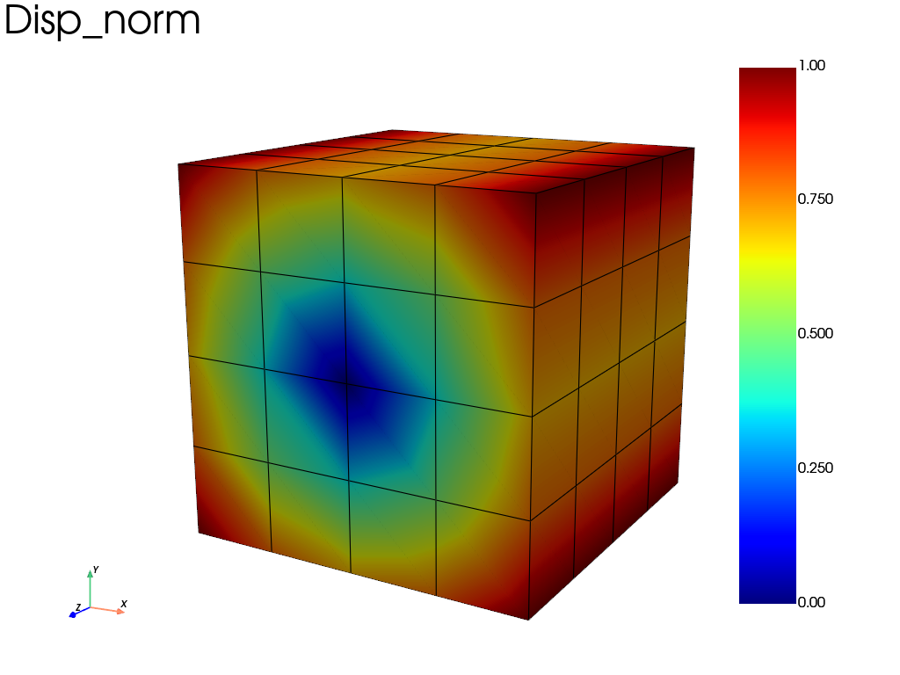

Note
Go to the end to download the full example code.
Large rigid rotation: objectivity check of the finite-strain update
A cube of elastoplastic material (simcoon EPICP) is rotated by 90° about
\(z\) as a rigid body, in 20 increments. The motion is prescribed through
the mean displacement gradient of a finite strain
fedoo.constraint.PeriodicBC, with
\(\mathbf{F}(t) = \mathbf{R}(\theta t)\). A rigid rotation must not
produce any stress: the printed maximum stress after the rotation checks the
objectivity of the finite-strain (updated Lagrangian) update and should be
negligible compared with the yield stress (300 MPa).
import fedoo as fd
import numpy as np
Mesh and material
Units: N, mm, MPa. The EPICP law (isotropic power-law hardening) is used
here; any other law, e.g. fd.constitutivelaw.ElasticIsotrop(E, nu),
should give the same zero stress. The thermal expansion coefficient
alpha is a required property of the law but has no effect here
(isothermal problem).
fd.ModelingSpace("3D")
NLGEOM = True
h = 1
w = 1
L = 1
E = 200e3
nu = 0.3
alpha = 1e-5 # thermal expansion coefficient
Re = 300 # yield stress
k = 1000 # hardening coefficient
m = 0.3 # hardening exponent
meshname = "Domain"
fd.mesh.box_mesh(
nx=5,
ny=5,
nz=5,
x_min=0,
x_max=L,
y_min=0,
y_max=h,
z_min=0,
z_max=w,
elm_type="hex8",
name=meshname,
)
mesh = fd.Mesh[meshname]
props = np.array([E, nu, alpha, Re, k, m])
material = fd.constitutivelaw.Simcoon("EPICP", props, name="ConstitutiveLaw")
wf = fd.weakform.StressEquilibrium("ConstitutiveLaw", nlgeom=NLGEOM)
Problem and boundary conditions
# node set for boundary conditions
nodes_bottom = mesh.find_nodes("Y", 0)
nodes_top = mesh.find_nodes("Y", 1)
node_center = mesh.nearest_node([0.5, 0.5, 0.5])
assemb = fd.Assembly.create(wf, meshname, "hex8", name="Assembling", n_elm_gp=8)
pb = fd.problem.NonLinear("Assembling")
# No external force acts on a rigid rotation, so the default force criterion
# has a zero reference: use the displacement criterion.
pb.set_nr_criterion("Displacement")
# set the desired outputs (the results folder is created if needed)
res = pb.add_output(
"results/rot_test",
["Disp", "Stress", "Strain", "P", "EP", "Wm"],
ignore_missing=True,
)
# Add periodic BC
bc_periodic = fd.constraint.PeriodicBC("finite_strain", dim=3)
pb.bc.add(bc_periodic)
tmax = 1
theta = np.pi / 2
pb.bc.add("Dirichlet", node_center, "Disp", 0)
# Prescribe F(t) = R(theta * t) by defining time_func, instead of the default
# linear interpolation of grad(u) = R(theta) - I. Linear component interpolation
# would give F(t) = I + t * (R(theta) - I), which contains an artificial stretch
# between the initial and final rotations.
pb.bc.add(
"Dirichlet",
"DU_xx",
1,
start_value=0,
time_func=lambda t: np.cos(theta * t) - 1,
)
pb.bc.add(
"Dirichlet",
"DU_xy",
1,
start_value=0,
time_func=lambda t: -np.sin(theta * t),
)
pb.bc.add("Dirichlet", "DU_xz", 0)
pb.bc.add(
"Dirichlet",
"DU_yx",
1,
start_value=0,
time_func=lambda t: np.sin(theta * t),
)
pb.bc.add(
"Dirichlet",
"DU_yy",
1,
start_value=0,
time_func=lambda t: np.cos(theta * t) - 1,
)
pb.bc.add("Dirichlet", "DU_yz", 0)
pb.bc.add("Dirichlet", "DU_zx", 0)
pb.bc.add("Dirichlet", "DU_zy", 0)
pb.bc.add("Dirichlet", "DU_zz", 0)
Dirichlet boundary condition:
var = 'DU_zz'
n_nodes = 1
value = 0
Solve and check the stress
pb.nlsolve(dt=0.05, tmax=1, update_dt=False, print_info=1, interval_output=0.05)
# Objectivity check: a rigid rotation must not produce any stress.
print("max |stress| after the rotation:", np.abs(assemb.sv["Stress"].asarray()).max())
Iter 1 - Time: 0.05000 - dt 0.05000 - NR iter: 2 - Err: 0.00000
Iter 2 - Time: 0.10000 - dt 0.05000 - NR iter: 2 - Err: 0.00000
Iter 3 - Time: 0.15000 - dt 0.05000 - NR iter: 2 - Err: 0.00000
Iter 4 - Time: 0.20000 - dt 0.05000 - NR iter: 2 - Err: 0.00000
Iter 5 - Time: 0.25000 - dt 0.05000 - NR iter: 2 - Err: 0.00000
Iter 6 - Time: 0.30000 - dt 0.05000 - NR iter: 2 - Err: 0.00000
Iter 7 - Time: 0.35000 - dt 0.05000 - NR iter: 2 - Err: 0.00000
Iter 8 - Time: 0.40000 - dt 0.05000 - NR iter: 2 - Err: 0.00000
Iter 9 - Time: 0.45000 - dt 0.05000 - NR iter: 2 - Err: 0.00000
Iter 10 - Time: 0.50000 - dt 0.05000 - NR iter: 2 - Err: 0.00000
Iter 11 - Time: 0.55000 - dt 0.05000 - NR iter: 2 - Err: 0.00000
Iter 12 - Time: 0.60000 - dt 0.05000 - NR iter: 2 - Err: 0.00000
Iter 13 - Time: 0.65000 - dt 0.05000 - NR iter: 2 - Err: 0.00000
Iter 14 - Time: 0.70000 - dt 0.05000 - NR iter: 2 - Err: 0.00000
Iter 15 - Time: 0.75000 - dt 0.05000 - NR iter: 2 - Err: 0.00000
Iter 16 - Time: 0.80000 - dt 0.05000 - NR iter: 2 - Err: 0.00000
Iter 17 - Time: 0.85000 - dt 0.05000 - NR iter: 2 - Err: 0.00000
Iter 18 - Time: 0.90000 - dt 0.05000 - NR iter: 2 - Err: 0.00000
Iter 19 - Time: 0.95000 - dt 0.05000 - NR iter: 2 - Err: 0.00000
Iter 20 - Time: 1.00000 - dt 0.05000 - NR iter: 2 - Err: 0.00000
max |stress| after the rotation: 2.3167587802831598e-10
The saved iterations can be browsed interactively with fd.viewer(res)
(requires pyvistaqt), which provides iteration and animation controls as
well as field and component selection. Here the final displacement is
plotted: the cube has turned by 90° without any distortion.
res.plot("Disp", "norm", "Node")

Total running time of the script: (0 minutes 1.470 seconds)